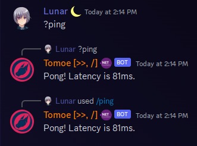

Commands Introduction
DSharpPlus.Commands is a new universal command framework designed with a "write-once, use-anywhere" mindset. Previously when developing bots with DSharpPlus, you'd have to choose between text commands through DSharpPlus.CommandsNext, or slash commands through DSharpPlus.SlashCommands. With DSharpPlus.Commands, you can have both. This framework is designed to be easy to use, and easy to extend.
Hello World
First, we're going to setup our code.
public async Task Main(string[] args)
{
string discordToken = Environment.GetEnvironmentVariable("DISCORD_TOKEN");
if (string.IsNullOrWhiteSpace(discordToken))
{
Console.WriteLine("Error: No discord token found. Please provide a token via the DISCORD_TOKEN environment variable.");
Environment.Exit(1);
}
DiscordClientBuilder builder = DiscordClientBuilder.CreateDefault(discordToken, TextCommandProcessor.RequiredIntents | SlashCommandProcessor.RequiredIntents);
DiscordClient discordClient = builder.Build();
// Use the commands extension
CommandsExtension commandsExtension = discordClient.UseCommands(new CommandsConfiguration()
{
DebugGuildId = Environment.GetEnvironmentVariable("DEBUG_GUILD_ID") ?? 0,
// The default value, however it's shown here for clarity
RegisterDefaultCommandProcessors = true
});
// Add all commands by scanning the current assembly
commandsExtension.AddCommands(typeof(Program).Assembly);
TextCommandProcessor textCommandProcessor = new(new()
{
// The default behavior is that the bot reacts to direct mentions
// and to the "!" prefix.
// If you want to change it, you first set if the bot should react to mentions
// and then you can provide as many prefixes as you want.
PrefixResolver = new DefaultPrefixResolver(true, "?", "&").ResolvePrefixAsync
});
// Add text commands with a custom prefix (?ping)
await commandsExtension.AddProcessorsAsync(textCommandProcessor);
// We can specify a status for our bot. Let's set it to "playing" and set the activity to "with fire".
DiscordActivity status = new("with fire", DiscordActivityType.Playing);
// Now we connect and log in.
await discordClient.ConnectAsync(status, DiscordUserStatus.Online);
// And now we wait infinitely so that our bot actually stays connected.
await Task.Delay(-1);
}
Let's break this down a bit:
- We use each processor's required intents to ensure that the extension receives the necessary gateway events and data to function properly.
- We register all the commands in our bot by passing the bot's assembly to
AddCommands. This will scan the assembly for any classes (group commands) or methods that have theCommandattribute, and register them as commands. - We register the
TextCommandProcessorprocessor with a custom prefix resolver.
What in the world is a command processor? In order to execute a command, we need to be able to parse the input. Text commands are regular old Discord messages, while slash commands are a special type of event that Discord sends to your bot. The TextCommandProcessor and SlashCommandProcessor are responsible for parsing these inputs and determining which command to execute. By default, all processors are registered with the command framework. You can add/create your own processors if you need to.
Creating A Command
Now that we have the command framework registered and configured, we can create our first command:
public class PingCommand
{
[Command("ping")]
public static ValueTask ExecuteAsync(CommandContext context) => context.RespondAsync($"Pong! Latency is {context.Client.Ping}ms.");
}
There's multiple things to note here:
- There is no longer a
BaseCommandModuleclass to inherit from. This is because the command framework is now attribute-based. - Your commands may now be
static. - Your command return type may now be
ValueTaskorTask, instead of only limiting toTask. - By default, any response made via
CommandContextwill not mention any user or role - those mentions must be specified manually by using aDiscordMessageBuilder.
Now start your Discord client, and type !ping in a text channel. Your bot should respond with "Pong! Latency is {Number}ms."

Creating a Group Command
Creating a group command isn't much different:
[Command("math")]
public class MathCommands
{
[Command("add")]
public static ValueTask AddAsync(CommandContext context, int a, int b) => context.RespondAsync($"{a} + {b} = {a + b}");
[Command("subtract")]
public static ValueTask SubtractAsync(CommandContext context, int a, int b) => context.RespondAsync($"{a} - {b} = {a - b}");
}
You can invoke these commands by typing !math add 5 3 or !math subtract 5 3 in a text channel.